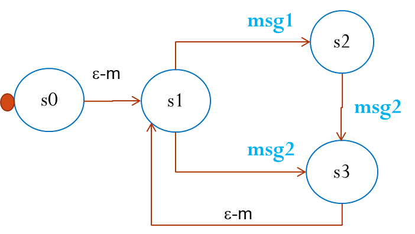
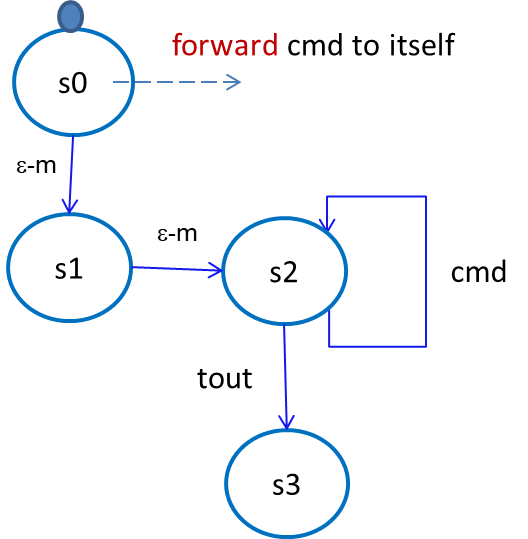

QActor (meta)model¶
Il linguaggio è definito utilizzando il framework Xtext e si basa su un nucleo di concetti che compongono il metamodello QActor . Questi concetti possono essere così riassunti:
A QA-System is a collection of active entities (QActors) each working in a computational node (Context).

QActors interact by using Messages of different types (Dispatch, Request,…) and Events.
A QActor can deliver information to another QActor (both local or remote) by using a proper operations or by emitting events.
High-level send-operations do not use low-level references, but only actor-names.
Each context owns a set QActors that can interact with components (actors or ‘aliens’) working on a different node, by means of the following protcols:
TCP : on the port specified by the Context
CoAP : on the port specified by the Context
MQTT : using the broker specified in the mqttBroker declaration
The mapping between the high-level communication actions and a specific protocol technology is done by the QActor-infrastructure with the help of the Eclipse QActor software factory deployed by the it.unibo.issLabStart/resources/plugins
The QActor software factory¶

The metamodel is supported by the qak-infrastructure defined in the project it.unibo.qakactor and deployed in it.unibo.qakactor-2.7.jar.
ActorBasic.kt¶
ActorBasic.kt is an abstract class that implements the concept of qakactor as a message-driven entity that handles messages by delegating the work to the abstract the method actorBody.

ActorBasic.kt includes a Kotlin actor (let us name it as kactor) associated to a dispatcher defined (si veda Coroutine context and dispatchers) according two arguments (confined and iobound) given in the constructor:
If confined=true, the actor is activated with a kotlinx.coroutines.newSingleThreadContext that makes use of just 1 Thread.
If confined=false and iobound=true, the actor is activated with a kotlinx.coroutines.newFixedThreadPoolContext with 64 Threads.
If confined=false and iobound=false, the default of type kotlinx.coroutines.newFixedThreadPoolContext is selected, that handles as many Threads as the number of CPUs available.
The class ActorBasic.kt can be used to define applicative actors working in message-driven way:
{kind=link}
ActorBasicFsm.kt¶
ActorBasicFsm.kt is an abstract class that extends ActorBasic.kt by defining the method actorBody, so to implement the behavior of a FSM.
{kind=link}
This class ActorBasicFsm.kt is designed according the same principles exposed in FSMKotlin. It can be used to define applicative actors working as a Finite State Machines.
Qak specification template¶
Un modello Qak viene definito organizzando la sua descrizione in base al segeunte template:
System < NAME OF THE SYSTEM >
mqttBroker "broker.hivemq.com" : 1883 //OPTIONAL
//DECLARATION OF MESSAGES AND EVENTS
//DECLARATION OF CONTEXTS
Context CTXNAME ip [host="HOSTIP" port=PORTNUM]
//DECLARATION OF ACTORS
The Qak syntax¶
The syntax of the language is defined in Qak syntax) using the Xtext framework as follows:
Messages and Events¶
In the QActor metamodel:
a message is intended as information sent in asynchronous way by some source to some specific destination.
For asynchronous transmission we intend that the messages can be ‘buffered’ by the infrastructure, while the ‘unbuffered’ transmission is said to be synchronous.
an event is intended as information emitted by some source without any explicit destination.
Events whose identifier start with the prefix local_ are not propagated outside the context in which they are generated.
A message has type: ApplMessage.kt, that requires the tuProlog library. Some help in building and sending messages is given by the class: MsgUtil.kt.
Message delivery rules¶
A message sent from a to a local actor b, is inserted in the kaq of the kactor of b.
An event raised in some Context, is delivered to all the other known Contexts of the system and to all the ‘alien’ connected via TCP or via MQTT.
When a message sent from a to actor b working in a different context (on a different node), the Qak-Infrastructure attempts to find the ipaddress-port of the receiver context:
If information about the context of b is found and a MQTT broker is specified in the model, the message is sent via MQTT; otherwise it is sent via CoAP.
If no information about the context of b is found, the message to deliver should be a reply to a request made by some ‘alien’. The system first checks for the existence of an active TCP connection with the receiver (the ‘alien’ made a request via TCP). In such a connection is found, the message is sent over it. Otherwise, an attempt is made to send the reply via MQTT, hoping that the ‘alien’ was MQTT-connected.
Message handling rules¶
With reference to a user-defined QAkactor qa of type ActorBasicFsm, let us call:
currentState: the name the current state of qa;
currentMsg: the msgId of the message that qa is processing;
kaq the message-queue of the Kotlin kactor;
mstore the message-queue local ActorBasicFsm ;
tset: the set of messages mentioned in the transition related to the currentState.
Messages sent to qa and events are inserted in the kaq.
fsmwork is called in a message-driven way with a new applMsg by the kactor loop , while qa is in currentState. Its behavior is:
qa checks for transition for applMsg:
if it is possible to fire a transition, set currentMsg=applMsg, change currentState and goto 2)
if no transition can be fired and discardMessages=false, store the message in the mstore;
qa executes the actions of a state: when the state actions terminate, if there is an empty-move goto 3) else goto 4);
qa executes a empty-move: set currentMsg=NoMsg , change currentState, and goto 2)
qa looks at the mstore and
if a message ms is found in tset : call fsmwork(ms);
if no message is found terminate fsmwork (the next call will be perfomed by the kactor loop );
Event propagation rules¶
The event emitted by a QActor that belongs to a qak-system (qasys) is propagated via Context to all the other QActor of qasys.
A standalone QActor (e.g. resource.qak) that does not use MQTT does not propagate events to QActors that use it, neither can perceive events emitted by them.
An event emiited by an ‘alien’ component connected to a QActor via TCP will be perceived by the connected QActor only (i.e. it is not propagated to the other Contexts of the system).
The event that reaches a Context (since propagated from another Contexts or emitted by an ‘alien’) is propagated only to the actors internal to that Context.
The event emitted by a QActor of a qasys that uses MQTT are propagated on the specified topic.
High-level message-operations¶
The methods that an application designer can use to deliver messages are:
forward for a Dispatch
request, replyTo, askFor for a Request
emit for an Event
The QActor metamodel does not define any explicit receive operation.
In fact, the behavior of a QActor is modeled as a Moore machine in which state-transitions are triggered by messaged and events.
Transitions and guards in Qak¶
A Transition is ‘fired’ if the related condition (whenTime, whenEvent, whenMsg, …) together with the related guard (if any) is true.
A guard is expressed as a condition written in user-defined Kotlin code.
StartUp¶
Scarica Eclipse Xtext e installa il plug-in Eclipse per Kotlin.
- Imposta (tramite Windows->Preferences )
il compilatore Java alla
versione 1.8e il jre ajre1.8.0_ ...
- Copia nella directory dropins di Eclipse i file che costituiscono il supporto al metamodello-qak:
it.unibo.Qactork_1.2.4.jar,it.unibo.Qactork.ui_1.2.4.jar,it.unibo.Qactork.ide_1.2.4.jar.
Creazione di un nuovo progetto¶
In un’area di lavoro vuota, crea un nuovo progetto Java
In
src, crea un file con estensioneqakA questo punto Eclipse dovrebbe presentare una finestra come la seguente:
Aggiungere la natura Kotlin al progetto
Ricordamo che:
Un file qak include la definizione (testuale) di un modello
che definisce struttura, interazione e comportamento di un sistema distribuito.
demonottodo.qak¶
Il linguaggio Qak mira a esprimere modelli eseguibili, ma non è completo dal punto di vista computazionale. Dunqu, parte del comportamento potrebbe talvolta dover essere espresso direttamente in Kotlin. Ma occorre non esagerare l’uso di una tale possibilità.
System demonottodo
Context ctxdemonottodo ip [host="localhost" port=8055]
QActor demonottodo context ctxdemonottodo{
State s0 initial {
[#
fun fibo(n: Int) : Int {
if( n < 0 ) throw Exception("fibo argument must be >0")
if( n == 0 || n==1 ) return n
return fibo(n-1)+fibo(n-2)
}
println("---------------------------------------------------- ")
println("This actor definies its activity completelyin Kotlin")
val n = 7
val v = fibo(n)
println("fibo($n)=$v")
println("----------------------------------------------------- ")
#]
}
}
demobetter.qak¶
Per limitare l’uso diretto di codice Kotlin, è opportuno introdurre classi di utilità e invocarne i metodi.
System demobetter
Context ctxdemobetter ip [host="localhost" port=8055]
QActor demobetter context ctxdemobetter{
[# var n = 7 #] //Global variable
State s0 initial {
[# ut.outMsg( "fibo($n)=" + ut.fibo(n)) #]
}
}
La utility ut potrebbe essere codice scritto in Java o in Kotlin. Se viene definita nel progetto in corso (ad esempio in una directory resource) è bene sia scritta in Kotlin.
import unibo.actor22comm.utils.ColorsOut
object ut {
fun fibo(n: Int) : Int {
if( n < 0 ) throw Exception("fibo argument must be >0")
if( n == 0 || n==1 ) return n
var v = fibo(n-1)+fibo(n-2)
return v
}
fun outMsg( m: String ){
ColorsOut.outappl(m, ColorsOut.GREEN);
}
}
Per usare codice Java, fare ricorso a file jar
demo0.qak¶
Questo esempio mostra l’uso di:
Dispatch msg : msg(ARG1, ARG2, ...): dichiarazione del dispatch di identificatore msg e con un template di payloadmsg(ARG1, ARG2, ...)in sintassi Prolog. Altre dichiarazioni: -Event msg : msg(ARG1, ARG2, ...)-Request msg : msg(ARG1, ARG2, ...)-Reply msg : msg(ARG1, ARG2, ...)onMsg( msg:msg(ARG1, ARG2, ...) ){ ... }: esegue il body solo se il messaggio corrente ha identificatoremsge se il suo payload può essere unificato in Prolog con il template di messaggio definito nella dichiarazione e con il template specificato in onMsg.payloadArg(N): si veda shortcut (in Uso di Prolog)sysUtil.logMsgs: crea dei file di log dei messaggi ricevutidiscardMsg On/Off: seleziondandodiscardMsg Offi messaggi che non sono di interesse in un certo stato vengono conservati, mentre condiscardMsg On, essi vengono eliminati.
|  | System demo0
Dispatch msg1 : msg1(ARG)
Dispatch msg2 : msg2(ARG)
Event alarm : alarm( KIND )
Context ctxdemo0
ip[host="localhost" port=8095]
QActor demo context ctxdemo0{
State s0 initial {
discardMsg Off
//[# sysUtil.logMsgs=true #]
}
Goto s1
State s1{
println("demo in s1")
}
Transition t0 whenMsg msg1 -> s2
whenMsg msg2 -> s3
State s2{
printCurrentMessage
onMsg( msg1:msg1(ARG) ){
println("s2: msg1(${payloadArg(0)})")
delay 1000
}
}
Transition t0 whenMsg msg2 -> s3
State s3{
printCurrentMessage
onMsg( msg2:msg2(1) ){
println("s3: msg2(${payloadArg(0)})")
}
}
Goto s1
}
|
{kind=link}
Output con discardMsg On
demo in s1
demo in s2 since msg1:msg1(1)
demo in s3 since msg2:msg2(1)
demo in s1
QActor perceiver context ctxdemo0{
State s0 initial {
println("perceiver waits ..")
}
Transition t0 whenEvent alarm -> handleAlarm
State handleAlarm{
printCurrentMessage
}
Goto s0
}
Output con discardMsg Off
demo in s1
demo in s2 since msg1:msg1(1)
demo in s3 since msg2:msg2(1)
demo in s1
demo in s2 since msg1:msg1(2)
demoStrange.qak¶
|  | System demostrange
Dispatch cmd : cmd(X)
Context ctxdemostrange ip [host="localhost" port=8055]
QActor demostrange context ctxdemostrange{
State s0 initial {
printCurrentMessage
forward demostrange -m cmd : cmd(a)
}
Goto s1
State s1{
printCurrentMessage
forward demostrange -m cmd : cmd(b)
}
Goto s2
State s2{
printCurrentMessage
}
Transition t0 whenTime 10 -> s3
whenMsg cmd -> s2
State s3{
printCurrentMessage
println("demostrange | s3, BYE")
}
}
|
{kind=link}
Questo esempio evidenzia che:
una empty-move è realizzata con emissione di un evento
local_noMsguna empty-move non crea indicazioni sui messaggi da elaborare: i messaggi in arrivo (inviati dall’attore stesso come auto-messaggi) sono memorizzati nella coda interna locale e vengono gestiti nello stato
s2un attore non deve rimanare in attesa perenne di messaggi, in quanto può fare una empty-move dopo un certo tempo (timeOut)
lo scadere del timeOut provoca l’emissione di un evento di indentificatore univoco
local_tout_aaa_sssoveaaaè il nome dell’attore esssè il nome dello stato corrente
Output
demostrange in s0 | msg(autoStartSysMsg,dispatch,demostrange,demostrange,start,5)
demostrange in s1 | msg(local_noMsg,event,demostrange,none,noMsg,4)
demostrange in s2 | msg(local_noMsg,event,demostrange,none,noMsg,4)
demostrange in s2 | msg(cmd,dispatch,demostrange,demostrange,cmd(a),6)
demostrange in s2 | msg(cmd,dispatch,demostrange,demostrange,cmd(b),7)
demostrange in s3 | msg(local_tout_demostrange_s2,event,timer,none,local_tout_demostrange_s2,8)
demostrange | s3, BYE